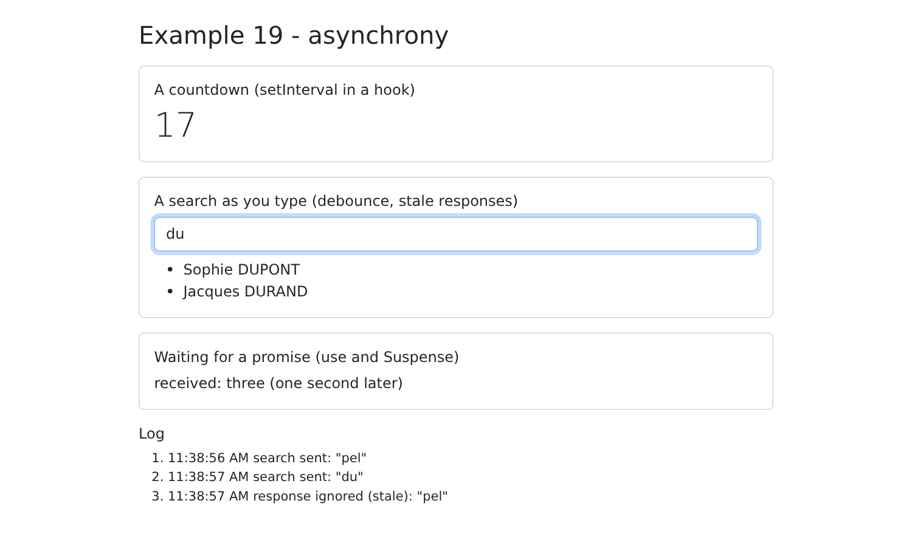
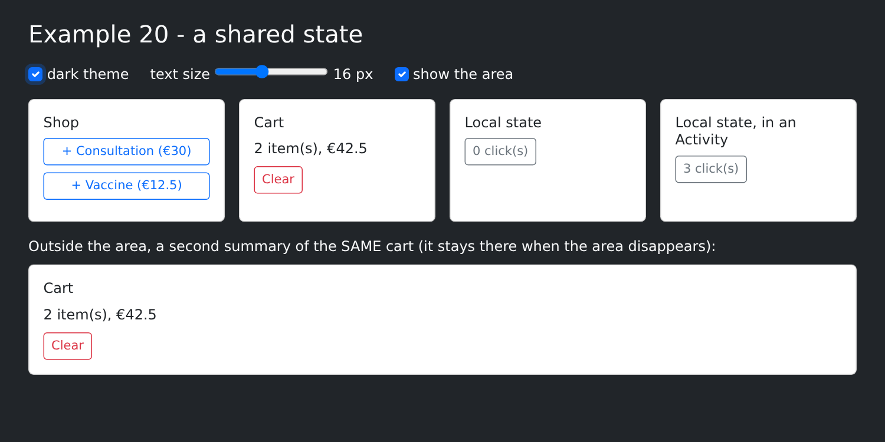

5. Asynchronität und geteilter Zustand
5.1. Beispiel 19: Asynchrone Verarbeitung
Vieles geschieht „später“: Timer-Ticks, Tastenanschläge, Serverantworten. [Angular] stützt sich dafür auf die Bibliothek [RxJS] und ihre Observables. [React] hat keine eigenen dedizierten Werkzeuge für Asynchronität: Wir kombinieren Zustand, Effekte und deren Cleanup, die wir in Hooks kapseln; und ab [React] 19 erlauben [use()] und [<Suspense>] es, auf ein Promise zu warten.
5.1.1. Ein Countdown
| // =========================================================================
// 19-asynchronous/src/hooks/useCountdown.ts - ein Timer in einem Hook
// -------------------------------------------------------------------------
// Vom Start bis 0, ein Wert pro Sekunde. Der Timer wird gestoppt, wenn der
// Zähler 0 erreicht... oder wenn die Komponente verschwindet (Cleanup).
// =========================================================================
import { useEffect, useState } from 'react';
export function useCountdown(start: number): number {
const [remaining, setRemaining] = useState(start);
// [remaining > 0]: Der Effekt wird neu gestartet, wenn sich diese Bedingung ändert - also
// einmal, wenn der Zähler 0 erreicht (der Timer wird dann gestoppt)
const active = remaining > 0;
useEffect(() => {
if (!active) return;
const timer = setInterval(() => setRemaining((r) => r - 1), 1000);
return () => clearInterval(timer);
}, [active]);
return remaining;
}
|
- Zeile 11: der Zähler;
- Zeile 15: der Zähler;
- Zeilen 16–20: Der Effekt hängt ausschließlich von [active] ab: Er wird beim Start ausgeführt (der Timer startet) und dann nur noch ein weiteres Mal, wenn der Zähler 0 erreicht; sein Cleanup stoppt dann den Timer, und die neue Ausführung tut nichts. [setRemaining((r) => r - 1)] verwendet die „Funktionsform“ der Aktualisierung: Der Timer wurde ein für alle Mal erstellt und sieht die neuen Werte von [remaining] nicht; die Funktion erhält dagegen den aktuellen Wert.
5.1.2. Anti-Bounce
| // =========================================================================
// 19-asynchronous/src/hooks/useDebouncedValue.ts - „Debounce“
// -------------------------------------------------------------------------
// Gibt den erhaltenen Wert zurück... aber erst, wenn er sich für
// delay Millisekunden nicht mehr geändert hat. Bei einer Suche während der Eingabe: Wir
// warten, bis der Benutzer eine Pause macht, bevor wir den Server abfragen,
// statt pro Taste eine Anfrage zu senden.
// Das Prinzip: Jeder neue Wert startet den Effekt neu, dessen Cleanup
// den Timer des vorherigen Werts abbricht.
// =========================================================================
import { useEffect, useState } from 'react';
export function useDebouncedValue<T>(value: T, delay: number): T {
const [debounced, setDebounced] = useState(value);
useEffect(() => {
const timer = setTimeout(() => setDebounced(value), delay);
return () => clearTimeout(timer); // ein Tastenanschlag vor Ablauf: abbrechen
}, [value, delay]);
return debounced;
}
|
Bei einer „Suche während der Eingabe“ warten wir, bis der Benutzer eine Pause macht, bevor wir den Server abfragen, anstatt bei jedem Tastenanschlag eine Anfrage zu senden: Das nennt sich Anti-Bounce ([debounce]). Der Hook gibt den empfangenen Wert zurück ... aber erst, wenn er sich [delay] Millisekunden lang nicht geändert hat:
- Zeilen 17–20: Jeder neue Wert startet den Effekt neu, der einen Timer setzt; und das Cleanup der vorherigen Ausführung BRICHT den Timer des vorherigen Werts AB. Daher erreicht nur der letzte Wert, auf den eine Pause folgt, [setDebounced].
Der Hook ist generisch ([<T>]): Er funktioniert für Werte beliebigen Typs.
5.1.3. Die Seite
| // =========================================================================
// 19-asynchronous/src/App.tsx - Timer, Suche während der Eingabe, use()
// -------------------------------------------------------------------------
// Vieles geschieht „später“: die Ticks eines Timers, die
// Tastenanschläge, die Antwort eines Servers. React hat kein eigenes Werkzeug
// für Asynchronität (Angular verwendet die Bibliothek RxJS): Wir kombinieren
// Zustand, Effekte und deren Cleanup, abgelegt in Hooks (hooks/),
// und seit React 19 use() + <Suspense>, um auf ein Promise zu warten.
// =========================================================================
import { Suspense, use, useEffect, useState } from 'react';
import { useCountdown } from './hooks/useCountdown';
import { useDebouncedValue } from './hooks/useDebouncedValue';
const DOCTORS = ['Marie PELISSIER', 'Paul TATOU', 'Sophie DUPONT', 'Jacques DURAND', 'Martine PELLETIER'];
// ein simulierter „Server“: Die Antwort trifft nach einer zufälligen Verzögerung ein
function search(text: string): Promise<string[]> {
const found = DOCTORS.filter((m) => m.toLowerCase().includes(text));
return new Promise((resolve) => setTimeout(() => resolve(found), 200 + Math.random() * 600));
}
// 3. ein Promise, EINMAL erstellt (außerhalb der Komponente): Es wird nach
// einer Sekunde aufgelöst
const messagePromise = new Promise<string>((resolve) =>
setTimeout(() => resolve('three (one second later)'), 1000),
);
// use(promise): der Wert des Promise. Solange es nicht
// aufgelöst ist, „suspendiert“ die Komponente ihre Anzeige: Das nächstgelegene <Suspense>
// zeigt stattdessen seinen Wartezustand (fallback) an
function Message({ promise }: { promise: Promise<string> }) {
const value = use(promise);
return <p className="mb-0">received: {value}</p>;
}
export default function App() {
const [log, setLog] = useState<string[]>([]);
const trace = (message: string) => setLog((j) => [...j, `${new Date().toLocaleTimeString()} ${message}`]);
// 1. ein Countdown: ein selbstgebauter Hook
const countdown = useCountdown(20);
// 2. eine Suche während der Eingabe
const [input, setInput] = useState('');
const text = useDebouncedValue(input.trim().toLowerCase(), 400); // nach 400 ms ohne Tastenanschlag
const [results, setResults] = useState<string[]>([]);
useEffect(() => {
if (text.length < 2) {
return; // keine Suche (und kein Cleanup)
}
// „stale“: Eine Antwort, die ankommt, NACHDEM eine andere Suche
// gestartet wurde, muss ignoriert werden (sonst würde eine langsame Antwort einer alten
// Suche die der neuen überschreiben)
let stale = false;
trace(`search sent: "${text}"`);
search(text).then((found) => {
if (stale) {
trace(`response ignored (stale): "${text}"`);
return;
}
setResults(found);
});
// das Cleanup: ausgeführt, wenn sich text ändert (neue Suche) oder beim Entfernen
return () => {
stale = true;
};
}, [text]);
// weniger als zwei Buchstaben: kein Ergebnis, unabhängig von denen der
// letzten Suche (ein berechneter Wert, kein weiterer Zustand)
const displayed = text.length < 2 ? [] : results;
return (
<div className="container py-4" style={{ maxWidth: 720 }}>
<h1 className="h3 mb-3">Example 19 - asynchrony</h1>
<div className="card p-3 mb-3">
<h2 className="h6">A countdown (setInterval in a hook)</h2>
<p className="display-6 mb-0">{countdown}</p>
</div>
<div className="card p-3 mb-3">
<h2 className="h6">A search as you type (debounce, stale responses)</h2>
<input className="form-control mb-2" placeholder="at least two letters: pel, dur..." value={input}
onChange={(e) => setInput(e.target.value)} />
<ul className="mb-0">
{displayed.map((r) => <li key={r}>{r}</li>)}
{displayed.length === 0 && <li className="text-muted">no result</li>}
</ul>
</div>
<div className="card p-3 mb-3">
<h2 className="h6">Waiting for a promise (use and Suspense)</h2>
<Suspense fallback={<p className="text-muted mb-0">waiting...</p>}>
<Message promise={messagePromise} />
</Suspense>
</div>
<h2 className="h6">Log</h2>
<ol className="small">
{log.map((line, i) => <li key={i}>{line}</li>)}
</ol>
</div>
);
}
|
- Zeilen 18–21: ein simulierter „Server“: Die Antwort trifft nach einer zufälligen Verzögerung von 200 bis 800 ms ein;
- Zeilen 25–27: ein Promise, das EINMAL (außerhalb der Komponente) erstellt und nach einer Sekunde aufgelöst wird;
- Zeilen 32–35: [use(promise)] liefert den Wert eines Promise. Solange es nicht aufgelöst ist, „suspendiert“ die Komponente ihre Anzeige: Das nächstgelegene [<Suspense>] (Zeile 96) zeigt seinen Platzhalterinhalt an ([fallback]). Sobald das Promise aufgelöst ist, ruft [React] die Komponente erneut auf, und [use] liefert den Wert. Das Promise muss AUSSERHALB der Komponente oder von einer Bibliothek erstellt werden, die es im Cache hält: Ein während des Renderns erstelltes Promise würde bei jedem Aufruf neu erstellt, und das Warten würde nie enden;
- Zeile 42: der benutzerdefinierte Hook;
- Zeile 46: der Suchtext, nach 400 ms ohne Tastenanschläge;
- Zeilen 49–69: die Suche, die neu gestartet wird, wenn sich der (gecachte) Text ändert:
- das Problem mit veralteten Antworten: Sie geben „pel“ ein, machen eine Pause, und die Suche startet; Sie geben „du“ ein, machen eine Pause, und eine zweite Suche startet. Wenn die Antwort auf „pel“ NACH der auf „du“ eintrifft (Netzwerkverzögerungen sind unvorhersehbar), würde sie die korrekten Ergebnisse überschreiben;
- Die Lösung (Zeilen 56–67): eine Variable, die für JEDE Ausführung des Effekts eigens existiert und auf [true] gesetzt wird, wenn sich der Text ändert. Jede Antwort, die danach eintrifft, wird ignoriert;
- Zeile 73: weniger als zwei Buchstaben: keine Ergebnisse, unabhängig von den Ergebnissen der letzten Suche. Das ist ein berechneter Wert, kein zusätzlicher Zustand.
Sie geben „pel“ ein, warten einen Moment und geben dann „du“ ein; die Antwort auf „pel“ trifft zu spät ein und wird ignoriert:

Eigenen Code zur Behandlung von Anfragen zu schreiben (in Bearbeitung, erfolgreich, Fehler, abgelaufen, bereits im Cache usw.) ist mühsam. Für die Kommunikation mit einem Server verwendet man in der Praxis eine Bibliothek, die das übernimmt: In Beispiel 24 wird das [TanStack Query] sein.
5.2. Beispiel 20: Ein geteilter Zustand
Beispiel 18 zeigt, wie man einen Store von Hand schreibt. Die Bibliothek [Zustand] leistet dasselbe in nur wenigen Zeilen und ist eine der am weitesten verbreiteten Bibliotheken zur Verwaltung von geteiltem Zustand in einer [React]-Anwendung (neben [Redux Toolkit], das umfassender, aber auch ressourcenintensiver ist).
5.2.1. Der Warenkorb
| // =========================================================================
// 20-shared-state/src/stores/cart.ts - ein GEMEINSAMER ZUSTAND mit Zustand
// -------------------------------------------------------------------------
// Ein „Store“ ist ein Zustand, der AUSSERHALB der Komponenten lebt, in EINER einzigen
// Kopie, geteilt von allen, die ihn lesen. Beispiel 18 hat
// einen von Hand geschrieben (useSyncExternalStore); die Bibliothek Zustand macht
// dasselbe in wenigen Zeilen:
//
// const useCart = create<Cart>()((set, get) => ({ ...state and actions... }));
//
// create gibt einen HOOK zurück. Eine Komponente liest darin, was sie braucht, über einen
// „Selektor“: useCart((p) => p.items). Sie wird nur erneut aufgerufen, wenn sich DIESES
// Stück des Zustands ändert. Übliche Organisation:
// - der ZUSTAND: Daten (items);
// - die AKTIONEN: Funktionen, die als einzige den Zustand ändern, über set();
// - die berechneten Werte: Funktionen (oder Selektoren).
// Der Store lebt, solange die Anwendung lebt: Er überlebt das Entfernen einer
// Komponente... aber nicht das Neuladen der Seite (F5), das die
// Anwendung neu startet. (Context + useReducer kann dieselbe Arbeit leisten;
// ein Store hat den Vorteil, auch AUSSERHALB der Komponenten lesbar zu sein.)
// =========================================================================
import { create } from 'zustand';
export interface Item {
label: string;
price: number;
}
interface Cart {
items: Item[];
add: (item: Item) => void;
clear: () => void;
}
export const useCart = create<Cart>()((set) => ({
items: [],
// set(function): erhält den aktuellen Zustand und liefert zurück, was sich ändert (der Rest bleibt erhalten)
add: (item) => set((p) => ({ items: [...p.items, item] })),
clear: () => set({ items: [] }),
}));
// wiederverwendbare Selektoren: aus dem Zustand berechnete Werte
export const itemCount = (p: Cart) => p.items.length;
export const cartTotal = (p: Cart) => p.items.reduce((s, a) => s + a.price, 0);
|
- Zeile 23: die Funktion, die einen Store erstellt;
- Zeilen 30–34: der Typ des Stores: der Zustand ([items]) und die Aktionen ([add], [clear]), die als Einzige ihn ändern können;
- Zeilen 36–41: [create<Cart>()(factory)] erstellt den Store und liefert einen Hook. Die Factory erhält [set], das den Zustand ändert: [set(object)] oder [set((state) => object)]; es werden nur die Änderungen übergeben; der Rest bleibt erhalten. Wie bei [useState]wird der Zustand selbst nie verändert: Es wird ein neuer erstellt;
- Zeilen 44–45: Selektoren – Funktionen, die einen Wert auf Grundlage des Zustands berechnen.
Der Store existiert, solange die Anwendung läuft, in genau EINER Kopie: Er überlebt das Entfernen einer Komponente ... aber nicht das Neuladen der Seite (F5), das die Anwendung neu startet. Kontext und [useReducer] könnten dieselbe Aufgabe erfüllen; ein Store hat zwei Vorteile: Er ist auch außerhalb von Komponenten lesbar (zum Beispiel von einem Router-Guard), und eine Komponente wird nur dann erneut aufgerufen, wenn sich der Teil des Zustands ändert, den sie liest.
5.2.2. Einstellungen
| // =========================================================================
// 20-shared-state/src/stores/preferences.ts - ein Zustand, der F5 überlebt
// -------------------------------------------------------------------------
// Damit Daten das Neuladen der Seite oder das Schließen
// des Browsers überstehen, müssen sie IM Browser gespeichert werden: localStorage (ein
// kleines Wörterbuch Schlüssel -> Zeichenkette, spezifisch für jede Website).
// Die persist-„Middleware“ von Zustand übernimmt das: Sie liest localStorage bei
// der Erstellung des Stores erneut ein und schreibt es bei jeder Änderung neu (Schlüssel
// "example20.preferences", Wert: das JSON des Zustands).
// Niemals sensible Daten darin speichern (Passwort, Token): Jedes Skript
// der Seite kann localStorage lesen.
// =========================================================================
import { create } from 'zustand';
import { persist } from 'zustand/middleware';
interface Preferences {
dark: boolean;
size: number; // Textgröße in px
update: (change: Partial<Pick<Preferences, 'dark' | 'size'>>) => void;
}
export const usePreferences = create<Preferences>()(
persist(
(set) => ({
dark: false,
size: 16,
update: (change) => set(change),
}),
{ name: 'example20.preferences' },
),
);
|
Damit Daten nach dem Neuladen der Seite oder dem Schließen des Browsers erhalten bleiben, müssen sie IM Browser gespeichert werden: [localStorage], ein kleines Schlüssel-String-Wörterbuch, das für jede Website separat existiert. Die „Middleware“ [persist] von [Zustand] übernimmt dies (Zeilen 24–31): Sie liest [localStorage] beim Erstellen des Stores und schreibt es bei jeder Änderung neu, unter dem Schlüssel [example20.preferences] (Zeile 30). Sensible Daten (Passwörter, Token) werden dort NIEMALS gespeichert: Jedes Skript auf der Seite kann [localStorage] lesen.
5.2.3. Die Komponenten
| // 20-shared-state/src/components/Shop.tsx - FÜGT dem gemeinsamen Warenkorb etwas HINZU
import { useCart, type Item } from '../stores/cart';
const PRODUCTS: Item[] = [
{ label: 'Consultation', price: 30 },
{ label: 'Vaccine', price: 12.5 },
];
export default function Shop() {
// es wird nur die Aktion gelesen: Shop wird nicht erneut aufgerufen, wenn sich der Warenkorb ändert
const add = useCart((p) => p.add);
return (
<div className="card p-3 h-100">
<h2 className="h6">Shop</h2>
{PRODUCTS.map((p) => (
<button key={p.label} className="btn btn-sm btn-outline-primary mb-2" onClick={() => add(p)}>
+ {p.label} (€{p.price})
</button>
))}
</div>
);
}
|
[useCart((p) => p.add)]: Eine Komponente liest den Store über einen Selektor und wird nur aufgerufen, wenn sich DER Teil des Zustands ändert, den sie liest. [Shop] liest nur die Aktion [add], die sich nie ändert: Sie wird nie aufgerufen, wenn sich der Warenkorb ändert.
| // 20-shared-state/src/components/CartSummary.tsx - LIEST denselben Warenkorb
import { itemCount, cartTotal, useCart } from '../stores/cart';
export default function CartSummary() {
const count = useCart(itemCount);
const total = useCart(cartTotal);
const clear = useCart((p) => p.clear);
return (
<div className="card p-3 h-100">
<h2 className="h6">Cart</h2>
<p className="mb-2">{count} item(s), €{total}</p>
<button className="btn btn-sm btn-outline-danger align-self-start" disabled={count === 0} onClick={clear}>Clear</button>
</div>
);
}
|
[CartSummary] liest die Anzahl der Artikel und die Summe über die Selektoren des Stores.
| // 20-shared-state/src/components/LocalCounter.tsx - ein LOKALER Zustand, der mit der Komponente verschwindet
import { useState } from 'react';
export default function LocalCounter({ title }: { title: string }) {
const [clicks, setClicks] = useState(0);
return (
<div className="card p-3 h-100">
<h2 className="h6">{title}</h2>
<button className="btn btn-sm btn-outline-secondary align-self-start" onClick={() => setClicks(clicks + 1)}>
{clicks} click(s)
</button>
</div>
);
}
|
Ein LOKALER Zustand, der zusammen mit der Komponente verschwindet.
5.2.4. Die Seite
| // =========================================================================
// 20-shared-state/src/App.tsx - drei „Gültigkeitsbereiche“ von Daten auf der Client-Seite
// -------------------------------------------------------------------------
// Dieselbe Frage wie in Beispiel 23 des NestJS-Kurses (Anwendungs-, Anfrage-
// und Client-Bereich), übertragen in den Browser:
// - der LOKALE Zustand einer Komponente (LocalCounter) verschwindet mit ihr;
// - der Zustand eines STORE (der Warenkorb) wird von allen Komponenten geteilt
// und überlebt deren Entfernung - aber nicht F5;
// - der in localStorage gespeicherte Zustand (die Einstellungen) überlebt F5 und das
// Schließen des Browsers.
// Und eine Neuheit von React 19.2, <Activity mode="hidden">: Der Inhalt wird
// AUSGEBLENDET, aber nicht entfernt; sein lokaler Zustand bleibt erhalten.
// „Bereich anzeigen“ aus- und wieder einschalten, dann die Seite neu laden: vergleichen.
// =========================================================================
import { Activity, useState } from 'react';
import { usePreferences } from './stores/preferences';
import Shop from './components/Shop';
import CartSummary from './components/CartSummary';
import LocalCounter from './components/LocalCounter';
export default function App() {
const { dark, size, update } = usePreferences();
const [areaVisible, setAreaVisible] = useState(true);
return (
<div className={`min-vh-100 ${dark ? 'bg-dark text-light' : ''}`} style={{ fontSize: size }}>
<div className="container py-4">
<h1 className="h3 mb-3">Example 20 - a shared state</h1>
<div className="d-flex flex-wrap gap-4 mb-3">
<label className="form-check-label">
<input type="checkbox" className="form-check-input" checked={dark}
onChange={(e) => update({ dark: e.target.checked })} /> dark theme
</label>
<label>
text size{' '}
<input type="range" min={12} max={22} value={size}
onChange={(e) => update({ size: e.target.valueAsNumber })} /> {size} px
</label>
<label className="form-check-label">
<input type="checkbox" className="form-check-input" checked={areaVisible}
onChange={(e) => setAreaVisible(e.target.checked)} /> show the area
</label>
</div>
<div className="row g-3 text-body">
{/* entfernt: Diese Komponenten verschwinden samt ihrem lokalen Zustand */}
{areaVisible && (
<>
<div className="col-md-3"><Shop /></div>
<div className="col-md-3"><CartSummary /></div>
<div className="col-md-3"><LocalCounter title="Local state" /></div>
</>
)}
{/* ausgeblendet: Die Komponente bleibt im Speicher, ihr Zustand bleibt erhalten */}
<Activity mode={areaVisible ? 'visible' : 'hidden'}>
<div className="col-md-3"><LocalCounter title="Local state, in an Activity" /></div>
</Activity>
</div>
<p className="mt-3 mb-2">Outside the area, a second summary of the SAME cart (it stays there when the area disappears):</p>
<div className="text-body"><CartSummary /></div>
</div>
</div>
);
}
|
- Zeile 23: Ohne Selektor wird der gesamte Store gelesen (und die Komponente wird bei jeder Änderung neu aufgerufen);
- Zeilen 47–53: Das Feld wird entfernt, wenn das Kontrollkästchen deaktiviert wird: Seine Komponenten verschwinden samt ihrem lokalen Zustand;
- Zeilen 55–57: [<Activity mode="hidden">] ([React] 19.2) blendet seinen Inhalt aus, ohne ihn zu entfernen: Die Komponente bleibt samt ihrem Zustand im Speicher. Das ist nützlich für Tabs oder für eine Seite, die man verlässt und zu der man zurückkehrt;
- Zeile 60: außerhalb des Bereichs eine zweite Zusammenfassung DESSELBEN Warenkorbs.
Legen Sie zwei Artikel in den Warenkorb, klicken Sie doppelt auf den ersten lokalen Zähler und dreifach auf den Zähler in der [Activity], deaktivieren und aktivieren Sie anschließend „Bereich anzeigen“ wieder und aktivieren Sie „dunkles Design“:

Der Warenkorb bleibt unverändert erhalten (er liegt im Store); der erste Zähler wurde auf 0 zurückgesetzt (seine Komponente wurde entfernt und anschließend neu erstellt); der von [Activity] hat seinen Wert behalten. Wenn Sie die Seite neu laden (F5), ist der Warenkorb leer, aber das Design und die Textgröße bleiben erhalten ([localStorage]).
Dies ist dieselbe Problematik wie in Beispiel 23 des [NestJS]-Kurses (Anwendungsbereich, Anfrage, Client), übertragen auf den Browser.